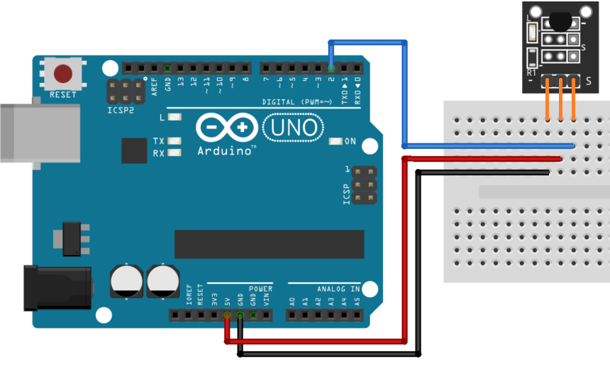

Модуль KY-001 датчика температуры на DS18b20
Модуль KY-001 предназначен для измерения температуры окружающей среды. Построен данный модуль на базе распространённого датчика DS18B20. Модуль датчика температуры KY-001 состоит из цифрового датчика температуры DS18B20, светодиода и резистора. С помощью датчика KY-001 собирают комнатные термометры и автоматические метеостанции.
Технические характеристики модуля KY-001:
- Напряжение питания — 3...5 В.
- Ток — 10 мА
- Диапазон измерения температуры — -55...+125°С.
- Точность измерения температуры в диапазоне -10...+85°С — ±0,5°С.
- Время измерения — не более 750 миллисекунд.
- Датчик обладает своим уникальным серийным кодом.

Назначение выводов представлено в таблице 1.
Таблица 1
| Контакт | Назначение |
|---|---|
| S | Выход данных |
| + | +5В |
| — | Общий (GND) |

Источники
arduino-tex.ru - KY-001 модуль температуры на базе DS18B20. Подключение к Arduino.